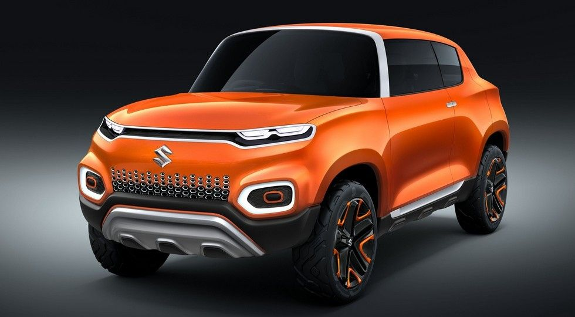
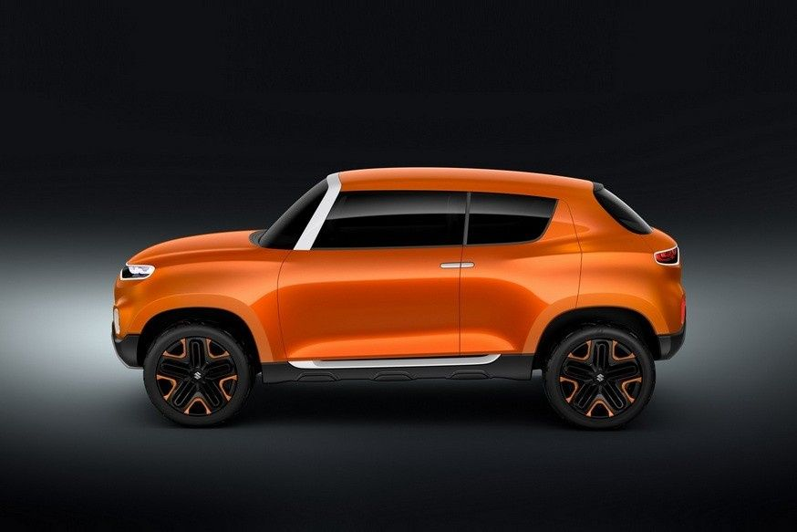
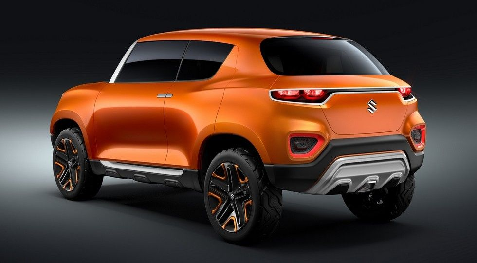

Маленькие дешевые автомобили сегодня чувствуют себя как никогда хорошо. Новые водители появляются постоянно, население в развивающихся странах растет, к тому же все хотят себе кроссовер. Вот и Suzuki работает над бюджетной моделью, пишет Автоцентр.
Ожидается, что серийную машину выполнят по мотивам концепта Suzuki Future-S (на фото). Смелый надуманно-брутальный облик выглядит очень трогательно в кузове маленького авто.

По предварительной информации, серийное название модели — Suzuki S-Presso. Забавная отсылка к тонизирующему горячему напитку. А помните маленький родстер Suzuki Cappuccino из девяностых? Вот-вот.

Новый Сузуки почти готов и сейчас вовсю проходит дорожные испытания. Сообщается, что его длина составляет 3 565 мм, ширина — 1 520 мм, а высота равна 1 564 мм. Колесная база — 2 380 мм.
По габаритам (кроме высоты) автомобиль немного меньше главного соперника — Renault Kwid. Но клиренс у моделей одинаковый — 180 мм. Предполагается, что новый кроссовер оснастят литровым трехцилиндровым бензиновым двигателем мощностью порядка 65 л.с.
Ориентировочная цена базового S-Presso составляет 4,9 тыс долл, топового — 6,5 тыс. Купить Рено Квид можно дешевле — за 3,9 тыс долл (с двигателем 0,8 л), но литровая модификация обойдется приблизительно в 6 тыс долларов. Первыми модель получат индийские покупатели.
Google.com